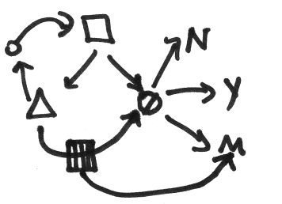

@Tags for a method call
@Tags for a method call
The following scaladoc comment:
/** * @since 1.5 * @tparam T A type of some sort * @param x The vertical argument * @param y The horizontal argument * @return False because this is an example * @throws IllegalArgumentException If argument(s) less than zero * may not display in your current version * @example aMethod(-1, 2) */
results in:
A type of some sort
The vertical argument
The horizontal argument
False because this is an example
aMethod(-1, 2)
1.5
@Tags for a deprecated method call
@Tags for a deprecated method call
The following scaladoc comment:
/** * @deprecated Use [[docSample.syntax.aMethod]] instead * @param x The vertical argument * @param y The horizontal argument * @return False because this is an example * @throws IllegalArgumentException If argument(s) less than zero * may not display in your current version */
results in:
The vertical argument
The horizontal argument
False because this is an example
Use docSample.syntax.aMethod instead
Basic Scaladoc Syntax
Just like javadoc, scaladoc comments are identified by adding an extra asterisk to the start of the comment block. So:
Scaladoc implements a markup language like Markdown or Textile but it is unique to scaladoc. Leading spaces and an asterisk are ignored, so an astrisk on a line by itself should be thought of as a blank line.
• A blank line marks a paragraph
• Two apostrophes for ' ' italic ' '
• Three apostrophes for ' ' ' bold ' ' '
• Two underbars for _ _ underline _ _
• A single backtick for a `
monospace font`• A link is made with two square brackets:
[[docSample.subCode]] becomes an internal link, subCode
[[http://scala-lang.org Link to the Scala Language]] becomes
an external link, Link to the Scala Language
• A single equal sign, like =heading=, on a line by itself makes a heading.
Extra == makes sub headings
• A block of code is marked with {{{ on the first line by itself and then }}} on the last line
• Four hyphens following a blank line makes a horizontal rule
1.becomes an ordered list, a., A., i., or I. can be used insteadHTML can be inserted into text
<br> forces a new line
forces insertion of a space character
Unicode characters can be inserted, for example ♘ becomes ♘
Entity References can be inserted, like ↑ becomes ↑
Using an HTML tag like,
<
img src="..\doc-resources\image.png" alt="flowchart drawing">you can insert an image or SVG into your document.

Official Scaladoc Page
Spewak's Scala Style Guide